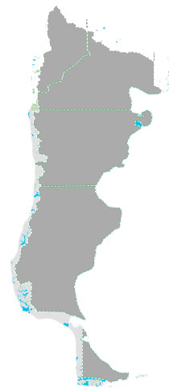
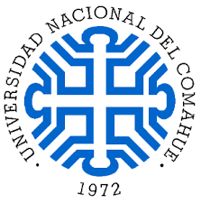
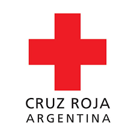

Universidad Nacional del Comahue
- Título de grado: Licenciado en Enfermería (5 años)
- Título intermedio: Enfermero (3 años)
- Dirección: Buenos Aires 1400, Neuquén. Teléfono: 0299 449-0300
- Dirección: Güemes y Einstein (C.P: 8328), Allen - Pcia. de Río Negro. Teléfono: 0298- 4450162 - Mail: coordinacionacademicaallen@hotmail.com
- Mail: https://www.uncoma.edu.ar/ - Al final de la página del link figura formulario de contacto.
- + más info
-

Cruz Roja Argentina - Filial Plaza Huincul
- Título intermedio: Enfermero (3 años)
- Ubicación: Av. Cutral Có 13, Plaza Huincul, Neuquén.
- Contacto: 0299 4963185
- Mail: p-huincul@cruzroja.org.ar
- + más info
-
IFSA - Instituto de Formación Superior
- Título intermedio: Enfermero (3 años)
- Podemos encontrar 3 sedes para realizar la carrera.
- Ubicación: Chubut 340, Neuquén. Tel: 0299 4823555. Email: info@ifssa.edu.ar
- Ubicación: Villegas 263. Cipolletti, Río Negro. Tel: 0299 4783420. Email: info@ifssa.edu.ar
- Ubicación: Mitre 1080. Gral. Roca, Río Negro. Email: secretariaroca@ifssa.edu.ar (Teléfono no figura en página)
- + más info